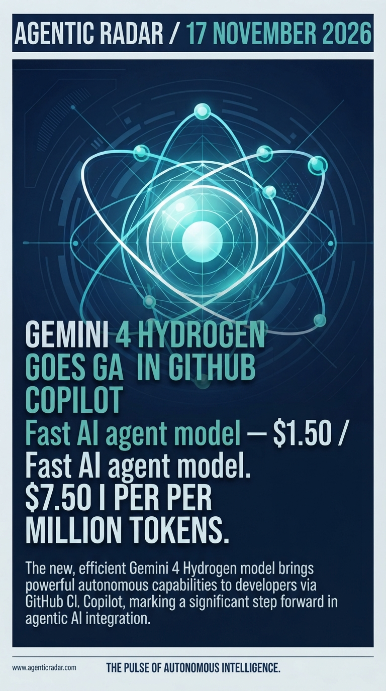

[974]
Gemini 4 Hydrogen GA Nov 12 reaches GitHub Copilot Nov 13: Google's fast agent model at $1.50/$7.50 per 1M, flat across 1M context, adapted from Carbon [announced-live]
Daily digest

Watch [977] — fetch: SEC/EDGAR Anthropic S-1/A filing — IPO pricing expected Nov 18, but the 1,900+ $1M-customer claim rests on secondary coverage citing the filing, not a primary filing link (gate 13)
Watch [975] — fetch: openai.com Businesses in ChatGPT announcement — Nov 10 Business Hub / Business Agents beta already covered Nov 12-15; propagate the primary URL before any new line
Watch [978] — [older] Nov 6 — fetch: aws.amazon.com What's New Kimi K3.1 Pro post — Bedrock GA at $4/$20 with Bedrock model card named, collected late; stale as news
Rejected [973] — [older] Nov 5: Muse agent expansion to Mexico, fifth market; stale as news, no new model or pricing
Rejected [976] — duplicate: self-hosted Claude Managed Agents private beta covered Nov 12-15; Nov 17 coverage adds no pricing or GA date
Rejected [980] — confirmed non-release: GLM-5.5 still unreleased at Nov 9 Z.ai check; GLM-5.3-FlashX aggregator listing is not a Z.ai launch
Rejected [981] — [older] Nov 5: Mistral Studio managed agents public preview already covered; no GA or agent pricing since
[972] deserved no further analysis: a local-inference integration for Inkling 2, useful plumbing with no pricing, policy or distribution change attached.